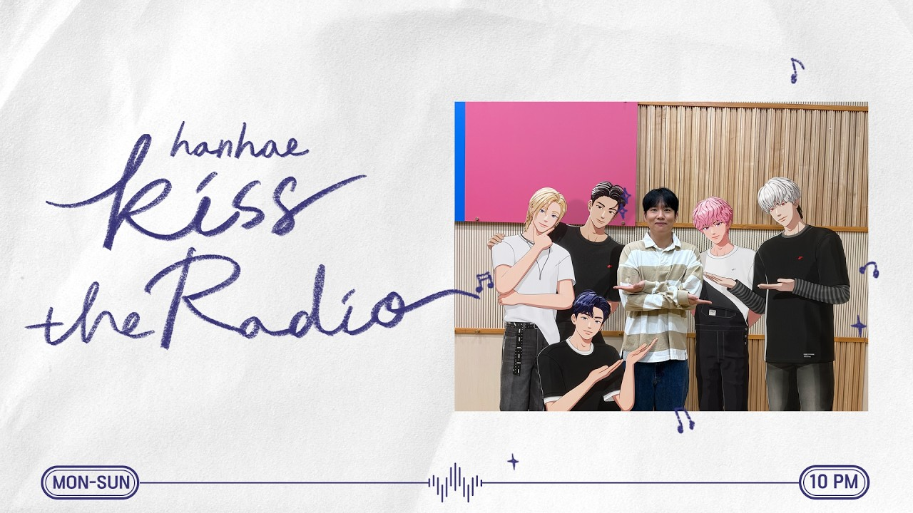

WE GO-6分類：WEGO-6 스스直播日期：2026-10-16—時雨 스스 星期五晚上XIU, TAEGANG, ZERO 字幕最後更新：2026-10-18在 YouTube 觀看原始影片×載入 YouTube 播放器 1010速度 0.75×1×1.25×1.5×2×00:00 / --:-- 繁中韓文雙語字幕大小20%字幕位置 原先位置懸浮字幕全螢幕劇院模式字幕外觀字幕樣式白字／黑底黑字／白底黃字／黑底白字描邊／無底底色透明度25%字幕高度2%恢復預設繁體中文點播放後，字幕會顯示在這裡韓文 分享這篇@fLINE𝕏 — 人喜歡這篇 這篇字幕對你有幫助嗎？ 0.0選擇 1～5 星 平均評分載入中展開雙語逐字稿 點擊查看完整內容雙語逐字稿雙語韓文繁中 自動跟隨播放文字大小 A−A＋重設字幕偏移（秒） 字幕比聲音早出現時填正數00:00:51안녕하세요 여러분呦囉奔 晚安00:01:03안녕하세요晚安00:01:07뭐 하고 있나 해서 왔어요想知道你們在做什麼 就過來了00:01:17저 일정하다가 잠깐 시간 남아서 간단히 뭐 좀 먹고 쉬고 있었어요跑行程中間有點空檔 我剛簡單吃了東西 在休息00:01:28그러다가 여러분 뭐 하고 계신가 해서接著就想看看呦囉奔在做什麼00:01:36오늘도 아주 엄청난 일정들을今天也完成了很厲害的行程00:01:42여러분들 입꼬리를 올려 드릴 만한 것들을 잘都是會讓呦囉奔00:01:47하고 왔지요嘴角上揚的事情喔00:01:55아 이거 공기 청정기 소리예요這個是空氣清淨機的聲音00:02:13오늘요? 오늘 오늘은 그래도 일찍 끝날 거 같아요 조금만 더今天嗎? 今天應該會比較早結束 再做一點00:02:20하다가就好了00:02:24아예 밤새지는 않을 거 같고應該不會整晚熬夜00:02:38아 저녁은 따로 먹었고 이제 좀 기력이 좀 떨어져 가지고 샌드위치晚餐另外吃過了 剛才有點沒力 所以又吃了00:02:45같은 거 좀 집어 먹었습니다一些三明治之類的東西00:02:53여러분은 오늘 하루 어땠어요? 근데 오늘 또 오붓하게呦囉奔今天過得如何? 不過今天也想00:03:01여러분이랑 이야기를 좀 하고 싶었는데和你們好好聊聊天00:03:08또 여러분들 보고 싶어 하는 또 불청객이 또 몇 분 계시더라고요但又有幾位不速之客 也很想你們00:03:14불청객 1 불청객 1不速之客一號 不速之客一號00:03:19오늘 불청객 1 2 제대로 소개 한번 해 주시죠不速之客一號 二號 好好自我介紹一下吧00:03:25안녕하십니까 저 제로요晚安 我是Zero00:03:32오예 오예好耶 好耶00:03:37또 게스트 오시나요? 게스트 왔습니다還有來賓嗎? 來賓已經來了00:03:47관등성명 시작 1開始報上名字 一00:03:502 3 차시우二 三 時雨00:03:54이제로 주태강입니다Zero 泰岡 是也00:03:59입니다 이거 케로로 선배님 처음에 제목 할 때 그건데是也 這是Keroro前輩一開始念標題的方式00:04:05어떤 거요? 처음에 제목 애니메이션 읽어哪一個? 開頭不是會念出動畫的標題嗎00:04:08주잖아요 아 예를 들면 제로와 태강이의例如Zero和泰岡00:04:12싸움입니다 입니다吵架 是也 是也00:04:15있어요有這個喔00:04:26전혀 예상 갔던 게스트예요 전혀 예상完全在意料之中的來賓啊 完全在意料之中00:04:32어쩔 수 없어요沒辦法嘛00:04:36제로랑 태강이 오늘도 토론했냐고요? 오늘은 토론을 할 시간이 없었어요問Zero和泰岡今天也辯論了嗎? 今天沒時間辯論00:04:42네 오늘對 今天00:04:44정말 바쁜 하루였었어 가지고過得很忙碌00:04:48무언가를 했었습니다 태강이 감기 그래도 많이 좋아진做了某些事 泰岡的感冒好像00:04:52- 거 같아요 - 네 많이 좋아졌습니다- 好很多了 - 對 好很多了00:04:53네對00:05:08아 그거 혹시 그거 하셨어요? 생각해 보셨어요?那個有沒有想過?00:05:13하늘에서 음식이 내린다면 어떠냐? 형 쌀국수如果天上下食物呢? 哥選越南河粉00:05:17어 맞죠? 안 본 줄 알고 아對吧? 我還以為你沒看00:05:21잔뜩 심술 날 뻔했죠 태강 형님差點開始鬧彆扭 泰岡哥00:05:25만약에 하늘에서 음식이 내립니다假如天上會下食物00:05:28네 어떠한 음식이 가장你覺得下哪種食物00:05:33- 좋을까요? - 하늘에서 음식이 내리면 안 되죠- 最好呢? - 天上不能下食物啊00:05:38거리가 지저분해지잖아요 그래서 만약에 와 태강아 너 말이 맞다街道會變得很髒 所以才說是假如啊 泰岡 你說得對00:05:43그죠? 아 내릴 수 내릴 수도 있죠 어對吧? 也不是不能下啦00:05:49저라면 저라면如果是我00:05:57- 초콜릿 - 안 됩니다- 巧克力 - 不行00:05:59안 되죠 안 되죠 안 됩니다 끈적거리잖아요不行 不行 會黏答答的00:06:01끈적거리고 아니 그럼 너는 뭔데?會很黏 不然你選什麼?00:06:04저는 면이에요 국수我選麵 麵條00:06:06그냥 면 그냥 면純麵條 純麵條00:06:08- 그냥 면을 먹겠다고? - 먹는 게 아니라 하늘에서 내리면- 你要吃純麵條? - 不是吃 是從天上掉下來00:06:12좋은게 이제이 이제 좋은게 많잖아 예를 들어 예를 들어 내리막길이好處很多啊 比方說00:06:17있어 그냥 내리막길 걸어가야 되잖아 근데 면이 있으면 그 위로有一段下坡 本來要自己走下去 但如果有麵條00:06:20- 슬라이딩하면서 - 아니죠- 就可以在上面滑下去 - 才不是00:06:22네가 면보다 가벼워? 넘어집니다你比麵條輕嗎? 你會跌倒00:06:25면이 부러지거나 면이 끊기겠지 그러면 너麵條會斷掉 所以你00:06:28잠시만요 토론 참가자님 화내지 마시고요等一下 辯論參賽者請不要生氣00:06:33논리적으로만 얘기하겠습니다我們只講邏輯00:06:36오케이 오케이 하지만 목소리 힘 좀 빼세요 공격적입니다好 好 不過聲音不要那麼用力 現在很有攻擊性00:06:39지금 안 그러면 목소리가 안 들려요不然你們聽不到我的聲音00:06:42아 지금 좀 더 설득력을 담기 위해서 하시는 건가요?現在是想讓自己更有說服力嗎?00:06:46정연하게 얘기하자면은 지금 저 친구의 네네條理分明地說 我覺得這位朋友00:06:50말이 안 된다고 생각합니다 왜냐면 삶은 면인가요? 아니면說的根本不合理 因為那是煮熟的麵嗎? 還是00:06:57딱딱한 면 삶은 면이죠? 그러면 그거 밟아 보셨어요?硬的麵? 是煮熟的吧? 你踩過嗎?00:07:01끊어집니다 무조건絕對會斷掉00:07:02밟아 본 적은 없는데 무조건 미끄러집니다 그렇죠? 미끄러진 게 또 굳어沒踩過 但一定會滑倒 對吧? 而且滑倒之後又乾掉00:07:06버리면 그 상태로 또 더워지는 거 생각하면 아까 얘기했다시피 초콜릿은再想到天氣變熱的話 你剛才說巧克力00:07:09끈적거려서 안 된다고 했는데 그의 뭐야?會黏答答所以不行 那你這個算什麼?00:07:13굉장히 설득력 있는 말이네很有說服力耶00:07:16자 그러면은 주제를 조금 한번 더 디벨롭시켜 봅시다那我們把題目再延伸一下00:07:20디벨롭 어떤 음식이 하늘에서 내렸을 때 가장延伸成 天上掉下哪種食物00:07:23피해가 최소화될 수 있는가? 어造成的損害最小?00:07:27일단 첫 번째 녹지 않아야 되고요 그렇죠 그죠?首先不能融化 對吧?00:07:30딱딱하지 않아야 되 그리고 일단 당이 없어야 돼 설탕이不能太硬 而且不能有糖00:07:32안 들어가 있어야 됩니다 그죠? 그리고 딱딱하지 않아야지 너不能加糖 對吧? 也不能太硬00:07:34맞으면 아프니까 그렇죠因為被砸到會痛 沒錯00:07:39- 아메리카노 - 아니지 그럼 잠겨- 美式咖啡 - 不行 那會淹水00:07:42그거는 늑대 살롱이잖아요 잠겨요 잠겨요那是狼之沙龍了啦 會淹水 會淹水00:07:45아 저는 찾아냈습니다 솜사탕我找到了 棉花糖00:07:49그것도 녹는다那個也會融化啊00:07:55음료수 아 끝飲料 結束00:07:58아니죠 제로 콜라 제로 콜라가 안 끈적이긴 하죠不對 零卡可樂 零卡可樂倒是不黏00:08:01탄산수 어 탄산수 탄산수 탄산수는 뭔가 약간 음식이라는氣泡水 氣泡水 氣泡水與其說是食物00:08:06개념보다는 약간 음료 오케이比較像飲料 好00:08:11음식이에요 타당했습니다是食物 有道理00:08:13아니 근데 음식 다 뭐가 들어가잖아요 사실상但食物其實都會加些什麼啊00:08:19두부 말씀하시네요 여러분 두부 좋다呦囉奔說豆腐 豆腐不錯00:08:23두부 좋은데요 역시 여러분豆腐很好耶 果然是呦囉奔00:08:25그거는 으깨져도 비슷한 느낌이죠 으깨지면 으깨진 대로 맛있죠那個壓碎也差不多 碎掉一樣好吃00:08:31너네 진짜 시끄럽다 지금 조용히 해야 될 시간你們好吵啊 現在也是該安靜的時間了00:08:37되긴 해 아네 맞네요 또 여러분들 또對耶 呦囉奔也可能00:08:39주무시기 전에 잠깐 들으시는 걸 수도 있기 때문에只是睡前來聽一下00:08:43알겠습니다 저희가 네 유부知道了 我們 好 油豆皮00:08:47유부 조금 애매해요油豆皮有點微妙00:08:50아 조금 그럼 혹식 약간 그런 거 있지 않나요? 조금 그 냄새가 조금那個不是有點味道嗎?00:08:58호불호가 조금 갈릴 수 있다 냄새도 조금 유부 좋아요味道可能有人喜歡 有人不喜歡 不過油豆皮很好00:09:02그 유부초밥에 또 좀 그 시큼한 냄새가 있잖아요 식초 아 그건 따로豆皮壽司不是有一點酸味嗎? 醋 那是另外00:09:08- 넣어 뿌리는 건가? - 그거는 그 안에 들어가는 밥에 식초를- 加上去的嗎? - 是裡面的飯會加醋00:09:11그럼 유부의 냄새가 아닌 거죠? 오케이 알겠습니다所以不是油豆皮的味道? 好 知道了00:09:16변론 좋았습니다這番辯論很不錯00:09:22연두부요?嫩豆腐嗎?00:09:24순두부 순두부嫩豆腐 嫩豆腐00:09:26순두부嫩豆腐00:09:31근데 어떤 음식이든 하늘에서 떨어져서 맞으면 아플 거 같은데 그렇죠 또不過任何食物從天上掉下來 砸到都會痛吧? 對啊00:09:35중력에 의해서 또 가속도가 붙어 버리면은因為重力加速00:09:37그죠 사실상 두부가 떨어져도 두부 맞고 기절할 수도 있다對啊 就算是豆腐 也可能被砸昏00:09:41그거 있잖아요 옥상에서 물풍선을 아 봤죠 봤죠 차가 찌그러지지看過從頂樓丟水球吧? 看過 看過 車子不是都被砸凹了嗎?00:09:48않나? 예 뭐 그렇다고對 好像是這樣00:09:50예對00:09:53그러면은 위험하니까 아 안 내릴 그죠 내리지 않는 걸로那太危險了 就不要下好了00:09:58많이 내려 어차피 내린다면 사要下就下多一點 反正都要下00:10:01최고급 한우就下最高級的韓牛00:10:03안 맞네又不一樣了耶00:10:05- 저는 계란찜이요 - 계란찜- 我選蒸蛋 - 蒸蛋啊00:10:08계란찜 괜찮아 계란찜 너무 좋겠다蒸蛋不錯 蒸蛋很好00:10:10아 갑자기 배고픈데요 너 뭐 밥 먹는다면突然餓了 你不是要吃飯嗎?00:10:16예 밥 먹어야죠 어 갑자기 배에서 소리가 들리기是啊 該吃飯了 肚子突然開始00:10:22시작했습니다發出聲音了00:10:30왜 쌀국수였어? 혹시 제로 씨는為什麼選越南河粉? Zero選的00:10:36- 그냥 국수였나요? - 그냥 국수- 是一般麵條嗎? - 對 一般麵條00:10:39멸치 국수 이런 거 예를 들어 밀가루 국수像鯷魚湯麵那種 比方說小麥麵條00:10:43- 밀가루로 만든 밀가루 - 밀가루 국수가 뭐예요? - 그냥 국수- 麵粉做的麵粉 - 麵粉麵是什麼? - 就一般麵條00:10:46국수 면을 얘기하는 거麵條 對 我說的是麵條00:10:48답했을 때 종류는 상관없고回答的時候沒有限定種類00:10:52쌀국수인 이유요? 저 일단 쌀국수問我為什麼是越南河粉? 首先00:10:57냄새를 좋아합니다 아我喜歡越南河粉的味道00:10:59아 제가 무언가를 먹을 때 음식을 잘我吃東西的時候00:11:03쏟는 편인데 쌀국수를 흘렸을 때가 좀 가장 괜찮았던 거 같아 아很容易打翻 但打翻河粉好像最沒關係00:11:10가장 최근에 흘렸던 음식이 칠리 소스였는데最近一次打翻的是辣椒醬00:11:12칠리소스 냄새가 정말 오래 가더라고요 네辣椒醬的味道留了很久00:11:15어 힘들었습니다 조금有點辛苦00:11:21쌀국수요越南河粉啊00:11:25치즈가루가 하늘에서 내려오면 좋겠다 아 다 들어오지希望天上會下起司粉 那個會跑得到處都是00:11:29근데 당신 치즈 별로 안 좋아하잖아요但你不是不太喜歡起司嗎?00:11:32- 엄청 좋아요 - 불닭에만 안 좋아하는 거- 很喜歡啊 - 只是不喜歡加在火辣雞肉麵上00:11:36거기에만은 허용하지 않습니다 대단한 친구입니다 아 배고파졌다唯獨那個不允許 真是厲害的朋友啊 肚子餓了00:11:43그렇다就是這樣00:11:46쏟을 걸 미리 대비하는 건 처음 봐요第一次看到會事先考慮打翻的情況00:11:59그냥 여기 태워주자 어? 우와就讓他坐這個吧 哇00:12:03아 이거 그건가요? 국수 미끄럼틀인가요?這就是麵條溜滑梯嗎?00:12:10그거 먹을 때 으흠吃那個的時候00:12:18갑자기 궁금한데 제로 음료들은 안 끈적하나?突然好奇 零卡飲料不會黏嗎?00:12:24끈적하지 않나? 그 제가 알기로 그 그런 걸 본 적 있어요 열을 가했을不會黏嗎? 我之前好像看過 加熱00:12:30때 끓였을 때 네煮沸的時候00:12:32이제 그냥 일반 콜라는 설탕이 남습니다 끈적끈적하게 근데 이제一般可樂會留下糖 黏黏的 但零卡飲料裡面00:12:37여기 이런데 들어가는게 다른 그加的是別的東西00:12:42알룰로스 알룰로스阿洛酮糖 阿洛酮糖00:12:44예 이런 것들이 아마對 這些應該00:12:47날아가요 열을 가하면會蒸發掉 加熱的時候00:12:52기체가 되는 걸로 알고 있습니다 그래서 그 기체我知道的是會變成氣體 所以那個氣體00:12:58아 대체당도 끈적해요 음 소금빵이요?代糖也會黏啊 鹽可頌嗎?00:13:03소금빵 소금빵은 맞으면은 기절할 거鹽可頌 被那個砸到00:13:06같은데요 근데 소금빵 괜찮은데應該會昏倒 不過鹽可頌不錯00:13:11위고식스의 먹짱은 우연인가요?WE GO-6的大胃王是羽然00:13:17제로인가요? 어還是Zero呢?00:13:22못 이기기는 해요 저는 제가 좋아하는 음식들을 이제 막我贏不了他 我對自己喜歡的食物00:13:25그렇게 할 수 있는데 우연 형은 모든 음식들을 다 엄청 잘 드셔可以吃很多 但羽然哥是什麼都很會吃00:13:32그리고 우리 우연이 형이 대체적으로 픽을 해 준 거는而且羽然哥通常選的東西00:13:38다 맛이 괜찮습니다 음都很好吃00:13:40- 태강이도 좀 괜찮고요 - 저는요?- 泰岡也不錯 - 那我呢?00:13:45너는 제로랑 같이 있으니까 앞담을 조금 해도你嘛 Zero也在 可以當面說你兩句嗎?00:13:51- 될까요? - 무슨 말 하시는지 알겠어요- 可以嗎? - 我知道你要說什麼了00:13:55예 아 이 또 동생이어도 또 허락을 구하는 거는就算是弟弟 我也會先徵求同意00:13:59저는 어쨌든 단체 생활에서 중요한 거라고 생각합니다 그렇죠我認為這對團體生活很重要 對啊00:14:03아 이제 조금 배달을 시킬 때 이제 제로가 시키면은 좀 많이 까먹을 때가點外送的時候 交給Zero點 他常常會忘記00:14:08많아요 아 맞아很多東西 對啊00:14:10그건 저도 그렇죠 갈릭 소스를 셋이서 있으니까 두不過我也會 像是我們有三個人00:14:16개 더 시켜서 어 한 세 개 해서 우리 각자 이렇게 찍어 먹자 섞이지就說多點兩份蒜味醬 湊成三份 一人沾一份00:14:22않게 했는데 이제 하나도 안 시킨다고這樣就不會混在一起 結果他一份都沒加點00:14:25네 그래 왜 안 시켰어? 어 어 까먹었어요就問 怎麼沒點? 他就說 忘記了00:14:30이랬던 경험이 좀 많았다 네 이게 두 세 번이 아니라 한這種經驗很多 不只兩三次00:14:34여섯 일곱 번 정도 매번에 가깝다大概六七次 幾乎每一次00:14:36- 그렇죠 그렇죠 - 그럼에도 맡겨 주셔서 정말 감사합니다- 對 對 - 即使這樣還是交給我點 非常感謝00:14:41까먹었어 앞으로는 넣어야지 맡겨忘記了 以後得記得加進去00:14:43주셔서 감사합니다謝謝你們願意交給我00:14:53앞담화라當面說啊00:15:003층에서 시옷 발음 제일 잘하는 사람 누굴까요? 저三樓誰最會發s的音? 我00:15:05아 저져 아 저 어제 스페이스 하면서도是我 我昨天開Space00:15:08여러분들께 인정을 받았습니다 저보다 낫다고 하시던 거呦囉奔也認證了 說比我還厲害00:15:12저도 텅 트위스터를 했거든요 제가 더 잘해요我也念了繞口令 我比較厲害00:15:16아 제가 잘해요 저 진짜 잘我很厲害 真的很會念00:15:25그래요 알겠습니다好 知道了00:15:30근데 나도 시옷 발음이 잘 안 되더라不過我的s發音也開始不太順00:15:34근데 저 원래 잘했었는데 최근 잘 안 되기 시작한 거我本來很會念 最近開始不太順00:15:39- 저도예요 - 진짜요? 형님 진짜요?- 我也是耶 - 真的嗎? 哥 真的嗎?00:15:43예 진짜요? 그 진짜 안 되려 모르겠어對 真的 不知道為什麼念不好了00:15:48왜 그런지 모르겠는데 너네랑 살아서 그런지 발음이 좀不知道是不是跟你們住在一起00:15:53꼬이기 시작하는 거 같아 저는 시옷 발음을 못 하는 거고發音開始打結了 我只是s發不好00:15:57- 제로는 말을 못 하는 거 같아 - 말을 못 아 저 잘해요 말- Zero是根本不會說話 - 不是 我很會說話00:16:04시우보단 제로가 낫다고요? 그렇죠? 여러분도 인정하시죠?比時雨好的是Zero嗎? 對吧? 呦囉奔也認同吧?00:16:12- 여기서 가려 보자 - 오케이 오케이- 就在這裡分出高下 - 好 好00:16:14해 보겠습니다 찾아보겠습니다 텅 트위스터試試看 我找一下 繞口令00:16:25다 같이 사시스세소 시작 사시스세소大家一起 sa shi su se so 開始 sa shi su se so00:16:28이거 봐 공기 다 샌다 사시스세소你看 氣全漏出來了 sa shi su se so00:16:33- 이거 봐 사시스 넌 진짜 안 된다 - 되게 잘했는데 방금- 你看 你真的不行 - 剛剛明明念得很好00:16:38사시스 사시스sa shi su sa shi su00:16:41수세소 발음이 공기가 새면 그게su se so 發音 如果會漏氣 那就00:16:46시우 태강 탈락이라고요? 그렇죠? 또 여러분時雨和泰岡淘汰嗎? 對吧 呦囉奔00:16:50내가 봤을 때 이거 이미 승자가 뽑혀 있는我看這場比賽的贏家00:16:55게임이었어 우리가 어떻게 해도 제로가 이기는 게임이었어 여러분들의根本早就決定好了 我們怎麼做都是Zero贏00:17:00픽이었군요原來是呦囉奔選好的啊00:17:05제로 시우 태강 다 탈락이라고 하셨 아 그래你們說Zero 時雨 泰岡全部淘汰? 原來如此00:17:19사다리를 딛고 서서 나무 위에 높이 달린 감을踩著梯子 站著摘樹上高處的柿子00:17:25지금 네가 찾은 거야 왜 없지? 어제 했던게 있었는데你找到了嗎? 怎麼沒有? 昨天有念過的啊00:17:34이거다 스위스에서 온 스미스 씨 이야기是這個 從瑞士來的史密斯先生的故事00:17:37- 너 진짜 못 하는데 지금 - 스위스에서 온 스시 이야기- 你現在就念得很差了 - 從瑞士來的壽司故事00:17:43스미th요 스미스예요 원래 스미스 아니에요?史密 th 不是史密斯嗎? 本來不是史密斯嗎?00:17:47아니죠 한국어 발음으로 읽어요 스미스에서 온 스미스 씨 이야기不是 請用韓文發音念 從史密斯來的史密斯先生的故事00:17:53스위스에서 온 스미스 씨 이야기 네 스미스 씨 이야기 네從瑞士來的史密斯先生的故事 對 史密斯先生的故事00:17:58근데요 해보세요你試試看00:17:59- 해 보세요 - 아니 그분이 왜요?- 你先念啊 - 不是 那個人怎麼了?00:18:01아 그 기회가 필요해요 일단 해보세요 빨리 친구 이야기需要先有個契機 你先念一下 快說那位朋友的故事00:18:05이제 곧 이야기가 나오니까 일단 한번 오픈해 주셔야 돼故事馬上就要開始了 先開個頭吧00:18:08아니 무슨 이야기인데요? 무슨 이야기를 할지 이제 형님到底是什麼故事? 哥要說什麼故事?00:18:10그니까 얘기를 해 주세요 무슨 이야기인지? 네가 하면은 오픈해就先說啊 是什麼故事? 你念的話00:18:13주신대 제로 선생님이 그 나라에서 오신Zero老師就會公布了 就是從那個國家來的00:18:16오신 미스 선생님의 이야기那位密斯老師的故事00:18:20미스에서 오신 미스 선생님이從密斯來的密斯老師00:18:22미스에서 오신 어시스턴트 해 보라고 하시는데從密斯來的 叫我們念assistant00:18:26어시스턴트 어시스턴트assistant assistant00:18:31어시스턴트 잘하는데assistant 念得不錯00:18:34태강이 잘하네泰岡很會念耶00:18:41아 뭔가 신경 쓰니까 안 되 그분이 왜요一注意就念不好了 那個人怎麼了?00:18:46어시스턴트 시우가 잘했다고 하시네요你們說時雨的assistant念得很好00:19:05다 비슷한데 뭔가 뭔가 오 저도 좀 그렇게 되는好像都差不多 我好像也會00:19:13거 같아變成那樣00:19:43발음 얘기만 나오면 스미스 씨랑 사슴 소환돼一聊到發音 就把史密斯和鹿叫出來了00:19:49- 숫사슴 - 태강 너무 잘했어요- 公鹿 - 泰岡太厲害了00:19:54쌈층 쌈층?tham cheung 三樓?00:19:58쌈층 뭔가 귀엽다 쌈층tham cheung 感覺好可愛 tham cheung00:20:04두 번째 토론 뭐가 있을까요?第二個辯論題目要選什麼?00:20:08두 번째 토론?第二個辯論?00:20:13아 재밌는 거 많았는데 저 생각을 많이 해해 해 놨는데本來有很多有趣的 我想了好多00:20:18- 갑자기 기억이 안 나 - 평소에 그런 거를 생각해?- 突然想不起來 - 你平常會想這些啊?00:20:22- 그럼요 - 대단한데- 當然 - 很厲害耶00:20:24그럼요 형 안 하세요 혹시? 이게 뭐예요?當然 哥不會想嗎? 這是什麼?00:20:28스위스에서 오셔서 산새들이 속삭이는 산림 숲속에서 사슴을 사사시 수색해從瑞士來 在山鳥低語的森林裡 仔細搜尋公鹿00:20:33식사하고 산속 샘물로 세수하며 사는 33살 샴쌍둥이 미세스 스미스 씨와吃完飯 用山中泉水洗臉生活的三十三歲連體雙胞胎史密斯太太和00:20:38미스터 심슨 씨는 삼성 설립 사장의 회사 자산 상속자인 사촌의 사돈辛普森先生 是三星創辦人社長的公司資產繼承人的表親姻親00:20:43김상속 씨의 숫기 있고 싱글싱글한金相續先生的靦腆又隨和的00:20:47제가 꼴찌 하도록 하겠습니다我自願當最後一名00:20:53하다가 숨이 차네요 시내 스시 식당에 식사하러 가서 싱싱한 샥스핀念到喘了 去市區的壽司店吃飯 吃新鮮的魚翅00:20:56스시와 삼색 사시미 참치 스시를 살사 소스와 쓱쓱 싹싹 비빈 거壽司和三色生魚片 鮪魚壽司 拌著莎莎醬00:21:02와 와 이게 뭐야 우와 우와哇 這是什麼啊 哇00:21:04제로야 1등 해라Zero 你拿第一吧00:21:10손이 산화되어 수술실에서手氧化了 在手術室裡00:21:16수술하게 된 선생님接受手術的那位先生00:21:21수술이 안 돼서手術不順利00:21:28힘이 샘솟아 다시 몸 사려力氣湧現 再次保重身體00:21:36좋은 거 주셨다 강아지가 바지를 입는다면 어떻게 입어야 할까?呦囉奔給了好題目 狗要穿褲子的話 該怎麼穿?00:21:42이거 알아요這個我知道00:21:46- 당연히 후자죠 - 전자죠- 當然是後者 - 我選前者00:21:49- 후자죠 - 전자죠- 後者啦 - 前者啦00:21:51아니죠 어 자 제가 먼저 이제 말해 될까?不是 那我先說可以嗎?00:21:54제가 중재해 드리도록 하겠습니다 보세요 오케이 바지란我來主持 你們看 好 褲子00:21:57무엇이냐? 다리 위에 입는 옷이지 않습니까?是什麼? 不就是穿在腿上的衣服嗎?00:22:01그렇죠? 바지를 상체에 입지 않죠對吧? 不會把褲子穿在上半身00:22:03하지만 여기 사진을 보시면 전자에 사진을 보시면이 강아지의 다리에但看這張圖 前面這張圖 是穿在狗的腿上00:22:10놓여져 있습니다 네沒錯00:22:11그렇죠 양쪽 다리에가 있죠對 在兩邊腿上00:22:14네 아 또 지금 또 뭐 생각났죠?又想到什麼了吧?00:22:17앞다리 뒷다리 앞에 다리 뒷죠前腿 後腿 都是腿00:22:19그죠? 네 그렇기 때문에 바對 所以00:22:21- 그렇기 때문에 바지는 저렇게 입는 게 맞다 - 정확히 반박드리겠습니다- 所以褲子就該這樣穿 - 我來精確反駁00:22:25하십시오 앉았어요請說 我坐好了00:22:28네 손 하면 어디를 주죠?說握手的時候 狗會伸哪裡?00:22:30앞발을 줍니다 그러면 거기가 어디죠? 상체라는會伸前腳 所以那是哪裡? 就是上半身00:22:33- 얘기죠 - 형님 근데 여기도 반박할 거- 是這個意思 - 哥 我也有話要反駁00:22:35있습니다 형님 방금 뭐라 하셨죠? 손이라 하셨죠? 손이라고 하면 안哥剛才說什麼? 你說手吧? 如果只說手00:22:38- 줍니다 th손이라고 해 주죠 - 뭐 던져도 되나?- 牠不會伸 要用th音說握手 - 可以丟東西了嗎?00:22:40- 잠시만요 정숙하세요 - 죄송합니다 - 알겠죠- 等一下 請肅靜 - 對不起 - 知道吧00:22:44주제와 관련된 이야기만 부탁드리도록請只討論和主題有關的內容00:22:47앞발을 줍니다 그러면 그걸 사람으로 비교했을 때 상체라고 할會伸前腳 和人類相比的話 可以說是上半身00:22:51수 있습니다 상체 그렇죠上半身 沒錯00:22:52하체는 그러면은 발 음那下半身就是腳00:22:55그죠? 발 쪽에 입는 거를 바지라고 하는對 穿在腳那邊的才叫褲子00:22:58거죠 그렇기 때문에 후자를 택하는 게所以選後者00:23:00- 맞다고 생각 - 근데 형님 방금 앞발이라고- 才是正確的 - 哥 但你剛才不是說前腳嗎?00:23:02하시지 않았습니까? 발이 어디 있습니까? 발이 밑에 위치해 있지 않습니까?腳在哪裡? 腳不就是在下面嗎?00:23:06그렇게 따지면 안 되는게 자 의류란 인간이 입는 겁니다 그거를 어不能這樣說 衣服原本是人類穿的00:23:13- 동물도 입을 수 있죠? - 아니 입을 수는 있죠 그래서 입혔잖아요- 動物也能穿啊 - 當然能 所以才幫牠穿了00:23:18그래서 우리 친구한테 입혔어요 친구한테 입혔는데幫這位朋友穿了00:23:21인간 기준으로 옷을 입힌다는 가정 하에라고 얘기가 나왔다면은 후자가如果是以人類標準幫牠穿衣服這個前提00:23:26맞다는 거죠 음 음那就是後者才對00:23:30맞지? 인정합니다 여러분은 어떻게 생각하시나요?對吧? 我接受 呦囉奔怎麼想?00:23:36- 근데 이렇게 입으면 춥지 않습니까? - 그래서 상의도 입혀- 可是這樣穿不會冷嗎? - 所以也幫牠穿上衣啊00:23:48던져도 됩니까?我可以丟東西了嗎?00:23:56그냥 뭐 요런 풍경이 이제 일상입니다這就是我們平常的日常00:24:0024 7 365 이어집니다全年無休 一年三百六十五天 一天二十四小時00:24:05너무 시끄럽습니다好吵00:24:10- 저는 쿠우타 말이 맞다고 생각합니다 - 쿠우타 여기 없는데- 我覺得空汰說得對 - 空汰又不在這裡00:24:15안녕하세요 쿠우타입니다 저는 태강이 형님 말이 맞다고晚安 我是空汰 我覺得泰岡哥說得對00:24:35브라키오사우루스는 목도리를 어떻게 맬까?腕龍要怎麼圍圍巾?00:24:38아 이거는 제가 참전하도록 하겠습니다這題我要參戰00:24:40네 알겠네 아 저는 답 답이 안 서서好 我想不出答案00:24:44제로가 해 주세요 형 먼저 말씀하실래요?Zero幫忙看 哥要先說嗎?00:24:49형은 1번 2번 목도리 대 모옥도리哥選一還是二? 圍巾 還是圍——巾00:24:53- 저는 모옥도리로 가도록 하겠습니다 - 모옥도리인가요?- 我選圍——巾 - 你選圍——巾嗎?00:24:56- 아니요 당신은 목도리로 가 - 그럼 제가 목도리로 가겠습니다- 不是 你選圍巾 - 那我就選圍巾00:24:59오케이 알겠 좋습니다 먼저 하세요好 很好 你先說00:25:01- 제가 형 먼저 - 먼저 하세요- 我 哥先說 - 你先吧00:25:04너의 의견이 이거였으니까 근거를 안 보여 주신 거니까因為你的意見已經是這個 你還沒說明理由00:25:07그렇죠 그걸 고른 이유가 무엇이냐對 要那樣圍的理由是什麼?00:25:10일단 1번 가장 중요한 겁니다 이게 무엇이냐? 일단 귀엽습니다首先 最重要的就是 可愛00:25:15인정하시죠?你認同吧?00:25:18다 귀여워요 근데 모옥도리가 조금 더 귀여워요都很可愛 不過圍——巾更可愛一點00:25:23아 네네 여기까지 하겠습니다好 就說到這裡00:25:27사실 저도 그런데 그리고 길게 해야 이제 목이其實我也覺得 而且要長一點00:25:33따뜻해지니까 절대 짧게 따뜻해지면 무슨 소용입니까 위에도 필요한데脖子才會暖 短短一段能暖到哪? 上面也需要啊00:25:36왜냐면은 이제 겨울이지 않습니까? 우리因為冬天要到了00:25:40여러분도 목도리 저렇게 해서 윗목 부분 다 찬바람 맞고 감기 걸리면呦囉奔如果像那樣圍圍巾 整段脖子都吹著冷風00:25:46큰일 납니다 모옥도리를 하셔 가지고感冒就糟了 所以要圍——巾00:25:49이거는 과학적으로 접근해도 모옥도리가 맞는 거 같아從科學角度看 也該是圍——巾00:25:53그렇죠? 목도리라는 거 자체의 순기능이對吧? 圍巾的基本功能00:25:55기능이 목을 말 그대로 보호하고 따뜻하게就是保護脖子00:25:59하려고 하는 건데 그죠?讓脖子保持溫暖 對吧?00:26:001번처럼 매면 저거 사실 목도리라고 하기 조금 애매하죠 약간 리본像第一張那樣綁 其實有點難說是圍巾 比較像緞帶00:26:06잠시만요 약간 이런 느낌等一下 像這種感覺00:26:07저 목도리로 가겠습니다 의류의 기능이라는 게 여러 가지가我選圍巾 服裝的功能00:26:11있지 않습니까? 네不是有很多種嗎? 對00:26:12패션 면으로 봤을 때 그렇지만 순기능적인 면을 봤을 때는從時尚角度看可以 但從基本功能看00:26:17모옥도리가 맞다는 거죠 자 이제 질문을 읽어 보면 목도리를就該是圍——巾 再看題目00:26:21어떻게 멜까? 네問的是怎麼圍圍巾00:26:23여기에만 집중을 한번 해 보도록 하겠습니다我們只專注在這件事00:26:25네 집중 어떻게 멜까? 어떻게 멜까?專注 怎麼圍? 怎麼圍?00:26:28네 둘 다 틀렸습니다 정답兩個都錯了 正解是00:26:31브라키오사우루스는 목도리를 맬 손이 없다 땡 브라키오사우루스腕龍沒有可以圍圍巾的手 錯 腕龍00:26:42그렇네 팔이 조금네 그 아 이게 그거네對耶 手比較短 原來是這個00:26:46함정 문제네 함정 문제 되지가是陷阱題啊 根本就00:26:50않는구나 함정 문제였다沒辦法圍 原來是陷阱題00:26:53아 여러분께서 정답을 주셨어요 예 뭐죠?呦囉奔給出答案了 是什麼?00:26:56목도리를 쓸 때 보통 턱까지 오지 않습니까?一般圍圍巾不是會圍到下巴嗎?00:27:00그렇죠 목도리를 맬 때 1번은 목도리가 아니라 목걸리다對啊 圍圍巾時 第一張不是圍巾 是項鍊00:27:05목걸리 아 정확한 거 같아요 진짜項鍊 這個很準確00:27:08목걸리잖아요 목걸리 그렇네요那是項鍊啊 項鍊 沒錯00:27:10그렇네 목도리가 맞아對耶 那才是圍巾00:27:12목걸리가 맞네是項鍊沒錯00:27:16근데 또 반박하신 분이不過也有人00:27:18계세요 바닥에 펼치고 그 위에 구르면 되지라고 하셨으니까反駁 說鋪在地上 再在上面打滾就好了00:27:22근데 매야 돼요 매듭을 아 이렇게 이렇게可是要綁起來 要打結 像這樣00:27:27악 이렇게 해가지고 아這樣做00:27:30어 그렇네요 입으로 이렇게 물어서 머리를 돌리면서 이렇게 목에다가對耶 用嘴咬著 一邊轉頭 繞到脖子上00:27:37그러면 감기게 그렇죠 그렇죠 이렇게 이렇게 물고就能纏上去了 對 咬住後00:27:40머리를 이렇게 돌리면은 어 근데 이제 매듭을 못 묶잖아요再這樣轉頭 但還是沒辦法打結啊00:27:49그렇죠 매듭을 못 묶죠 그러면 잘 풀리죠對 沒辦法打結 就很容易鬆開00:27:57음 브라키오 씨의 의견도 좀 들어봐야是不是也該聽聽00:28:00하지 않을까?腕龍本人的意見呢?00:28:06다른 친구한테 부탁하면 안 되려나? 아 근데不能請其他朋友幫忙嗎? 不過00:28:12티라노사우루스도 보면 팔이 짧아暴龍的手臂也很短00:28:14짧아 브라키오까지 팔이 안 닿아太短了 搆不到腕龍那裡00:28:19그러면은 이제 팔 긴那就找手比較長的00:28:22친구가 있긴 해요 뭐였죠?是有這種朋友 叫什麼來著?00:28:27나는 아 익룡 익룡은 아니에요 제가 말한會飛的 翼龍 不是翼龍 我說的不是那個00:28:31거 아니고 아 제가 알아요 자我知道了00:28:36아 그 입으로 해 주면 되지可以用嘴巴幫牠啊00:28:41맞네 근데 브라키오사우루스가 키가 엄청對耶 可是腕龍00:28:46커요 근데 입으로 하려면 브라키오사우루스 등에 올라타서 해야 되는데很高 要用嘴巴幫忙 就得爬到腕龍背上00:28:50사실상 불가능하거든요 음實際上不太可能00:28:54음 아 근데 여러분이 또 클래식 문제不過呦囉奔又丟了一個經典題目00:28:59하나 던져 주셨다 닭이 먼저일까요? 알이 먼저일까요?先有雞還是先有蛋?00:29:04이거는 아직도 정답이 없잖아요 닭이 먼저냐 알이 먼저냐這個到現在還沒有答案吧 先有雞還是先有蛋?00:29:10- 닭이 먼저죠 - 근데 닭은 알에서- 當然先有雞 - 可是雞是從蛋裡00:29:13- 태어나잖아 - 아니죠- 孵出來的啊 - 才不是00:29:16예 닭이 있었기에因為先有雞00:29:18- 알을 낳을 수 있었던 거 - 저는 알이라고 생각- 才能生蛋 - 我覺得是蛋00:29:21그러니까 알이 있었기에 닭이 있었던 거죠就是因為有蛋 才有雞啊00:29:24근데 그 알이 어떻게 생겼 누가 낳아야지可是那個蛋怎麼來的? 總得有人生00:29:29- 생기는 게 알인데 - 그럼 그 닭이 어떻게 생겼을지 누가- 才會有蛋 - 那雞又是怎麼來的?00:29:32압니까? 옛날 공룡사를 보면 물에 살던 애가 육지로 올라오면서 진화한誰知道? 看以前的恐龍歷史 水裡的生物上岸00:29:40거예요 사실상 알에서 닭이 짠 이게 아닙니다 진화한 개체가是進化來的 實際上不是蛋裡突然冒出一隻雞 是進化的個體00:29:45태강 씨 잠시만요 알을 낳泰岡 等一下 生蛋00:29:47여러분이 잠깐 여쭤 보신게 있습니다呦囉奔有個問題想問00:29:51알이요對 是蛋00:29:53알蛋00:29:58어 그럼 형의 말씀은 이제 닭은 원래 다른 이제 수중에서 사는所以哥的意思是 雞原本是生活在水裡的00:30:02수중생물이 진화해서 예水生生物進化來的00:30:05공룡이 아니었을 수도 있지만 아 악어 악어 이런 걸 수도也不一定是恐龍 也可能是鱷魚之類的00:30:08있겠네요 뭐 악어였을 수도 있고 그렇죠也可能是鱷魚 對啊00:30:12지금 들어왔는데 이거 무슨 상황인가요?剛進來 這是什麼情況?00:30:14궁금한 게 그분들은 3층에서 토론을想知道他們在三樓的辯論00:30:17물 속에서 사는 생물이 있잖아요 네不是有生活在水裡的生物嗎? 對00:30:20물속에 생 살았던 생물들이 있었을 거 같아 네 근데 이제 진화를 하면서以前應該有生活在水裡的生物 對 但隨著進化00:30:24이제 점점 육지로 올라온 거잖아요 그럼 그 중간 단계에 있었던 사람들은不是漸漸上岸了嗎? 那處於中間階段的人00:30:27숨을 바다에서 쉬어요 공기로 쉬어요?是在水裡呼吸 還是呼吸空氣?00:30:31- 둘 다 쉬어요 - 그럼 이렇게 반쪽 얼굴 반만 아니- 兩種都能 - 那是半邊臉 不是00:30:34이렇게 한 거 처음에는 폐호흡이 발달되지 않았으니까像這樣 一開始肺部呼吸還不發達00:30:37- 폐호흡으로 한 30분 쉬는데 - 30분이요?- 用肺呼吸三十分鐘 - 三十分鐘?00:30:40- 30분이요? - 30분 쉬는데 숨이 조금 힘들어- 三十分鐘? - 呼吸三十分鐘後 會有點難受00:30:44하잖아요 그러면 잠깐 물에 들어가 가지고 아가미로 숨을 쉬고就先回水裡 用鰓呼吸00:30:48그런 개체가 있었을 거예요 분명히 그렇죠 너무 힘들었을 것 같아一定有過這樣的個體 對啊 感覺好辛苦00:30:52그래서 기간이 길어진 거죠 진화하는 거에 대한 기간이所以才會花那麼長的時間 進化所需的時間00:30:57생활하면서 진화하는 그 있죠 네 너무 힘들었어一邊生活一邊進化 那個 對 好辛苦00:31:02예 오늘의 토론은 여기까지 하도록 하겠습니다 진짜 우리 여러분들이今天辯論就到這裡 呦囉奔00:31:07기가 많이 빨리신 거 같아요 지금好像被吸走很多精力了00:31:09죄송합니다 갑자기 어지러워졌어요對不起 突然頭昏眼花了00:31:12근데 이런 말씀 드리면은 그래도 잠 잘 오실까 싶어서但說這些 也許你們就更好睡了00:31:17시우야 나 분위기 제대로 깨달았어 약간 이런 풍경이 많이 펼쳐집니다時雨 我完全理解你們的氣氛了 平常就經常是這種場面00:31:28우연이 형한테 나중에 한번 물어봐 줬으면 좋겠다 우연이 형 대답 궁금하다希望之後也問問羽然 好想知道羽然哥的答案00:31:33우연이형이요? 아데 우연이형羽然哥嗎? 不過羽然哥00:31:36쓸데없는 거 얘기하지 마 태강아泰岡啊 別聊這些沒用的啦00:31:41치킨은 맛있어 그냥 너네가 생각하는 게 맞는 거지炸雞很好吃 你們覺得對就對00:31:46각자의 생각은 다 소중한 거야 태강이 말도 맞고 시우 말도每個人的想法都很珍貴 泰岡說得對00:31:52맞는 거지時雨說得也對00:31:58집에 있는데 집에 가고 싶어졌어요明明在家 卻想回家了00:32:09닭도 맛있고 알도 맛있지雞也好吃 蛋也好吃00:32:21다섯 명의 시우와 다섯 살 시우 다섯 명의 태강과 다섯 살 태강 다섯五個時雨和五歲的時雨 五個泰岡和五歲的泰岡00:32:29명의 제로와 다섯 살 제로 저는 다섯 살五個Zero和五歲的Zero 我選五歲00:32:36형 누구요?哥 誰啊?00:32:39다섯 살 시우 괴롭히려고 하시나요?你是想欺負五歲的時雨嗎?00:32:42아니요 다섯 살 시우 귀여울 거 같은데요不是 五歲的時雨應該很可愛00:32:46- 제로는요? - 다섯 명의 다섯 살 시우는 안 돼- Zero呢? - 不可以選五個五歲的時雨00:32:49다섯 명의 다섯 살 시우 그거는 쉽지 않을 수 있어五個五歲的時雨 那可能不好應付00:32:53다섯 배로 귀엽잖아 저는不是可愛五倍嗎?00:32:58와 오태강 오태강哇 五個泰岡 五個泰岡00:33:01오태강 오태강 있으면은 이제 또 오태강如果有五個泰岡 五個泰岡00:33:075제로 있으면은 든든하기는 하겠네요 음再有五個Zero 感覺很可靠00:33:12이제 중창을 이제 어 합창단을 만들 수 있네요可以組重唱 或是合唱團00:33:17그렇죠 그렇죠 그리고 왜야?對啊 對啊00:33:19그리고 5태강 5제로 1시우 형 있으면 축구도 할 수 있네而且五個泰岡 五個Zero加一個時雨哥 就能踢足球00:33:26그렇네 11명이라서對耶 十一個人00:33:28아 와우 재밌겠다好像很好玩00:33:31그래 그 다섯 명 중에 한 명은 골키퍼의 재능이 있겠지五個裡面應該有一個有當守門員的天分吧00:33:51다섯 살 태강 개구쟁이었을 듯 아 뭐 거의 600 몇십년 전五歲的泰岡應該很調皮 那已經是六百幾十年前00:33:57기억도 안 납니다 일이라 저희 기억도 안 납니다的事了 我們不記得了00:34:06혹시 한 명 시우가 골키퍼인가요? 아니 시우 형은 저기 앞에 세워 가지고那唯一的時雨是守門員嗎? 不是 時雨哥要放在前面00:34:14스트 스트라이커 해야죠 원 스트라이커로 하겠습니다當前鋒 我要當單前鋒00:34:18그래도 골키퍼는 키가 크면 좋으니까不過守門員身高高一點比較好00:34:23다섯 살에 시우 형 몰랐어요五歲的時候 我還不認識時雨哥00:34:29그거 보셨습니까? 축구하는데 왜 이렇게 축구를 안 하냐 하면서 올라온 영상이 있는데有看過那個嗎? 有人問踢足球為什麼不這樣踢的影片00:34:33올라온 영상이 있는데 공이 중간에 있어 11명의 선생님들이 다 손 잡고球在中間 十一個人全部手牽手00:34:38- 동그랗게 - 저는 그 이유를 압니다- 圍成一個圓 - 我知道原因00:34:40- 이러고 가고 - 반칙입니다 그거- 像這樣走 - 那個犯規00:34:42- 반칙이에요? 왜요? - 룰 규정상 그거 있어- 犯規嗎? 為什麼? - 規則就是有規定00:34:46동그랗게 하면 안 됩니다 예 그 왜냐면은 상대 선수가 갈 때不能圍成圓圈 因為對方球員要過來00:34:50막히잖아요 그죠? 예 그 그게 이제 반칙입니다 이會被擋住 對 那就犯規了00:34:53진로 방해가 다 이유가 있는 겁니다阻擋前進路線 都有原因的00:34:59안 하는데 이유가 있겠죠 그죠?大家不那樣做 是有原因的 對吧?00:35:04그죠? 아직도 깨달아지 못한 거 같습니다 제로Zero好像還沒想通00:35:07그럼 다 들어보내고 그대로 갈 수 있겠那讓大家都進來 不就能直接走了?00:35:10제로 날개로 골키퍼 하면 다 막을 수 있을 거Zero用翅膀守門 應該能全部擋下來00:35:13아 그럼요 어 그러게요當然 對耶00:35:14쫙 펼치면 골대 끝에서 골대 끝까지 닿나요?全部張開 能從一邊門柱碰到另一邊嗎?00:35:17그 어떠 한 것도 들어갈 수 없죠 음什麼都進不去00:35:21나중에 한번 해 볼까요 세워 놓고 다 슈팅해之後試試看吧? 讓他站好 我們全部射門00:35:26좋은데요 막아봐 페널티킥不錯 擋看看 十二碼罰球00:35:46날개 부러지면 어떡해? 아니 안 부러지겠다고 자기가 자기가翅膀斷掉怎麼辦? 他自己說不會斷啊00:35:52제가 괜찮습니다沒關係 我可以00:35:57다섯 살 쿠우타 대 다섯 명 쿠우타 근데 쿠우타는 1년 전이어 가지고五歲的空汰和五個空汰 空汰才是一年前的事00:36:01그다섯 살이어도 사실 뭐 비슷하죠所以五歲其實也差不多00:36:05그렇죠 그래도 1년 전에 더 귀여웠던 거對 不過一年前00:36:07같습니다 다섯 살에 쿠타 하겠습니다應該更可愛 我選五歲的空汰00:36:09근데 저 다섯 명 쿠우타는 버터떡 값이 감당이 안 될 것但如果有五個空汰 奶油年糕的費用00:36:13같아서 다섯 살 쿠타로 가도록 하겠습니다應該負擔不起 所以選五歲的空汰00:36:33180cm의 벌레와 함께 산다 180마리의和一隻一百八十公分的蟲住 還是和一百八十隻00:36:39벌레와 함께 산다 와 전 아蟲住? 哇 我00:36:44- 저는 180마리요 - 저는 180cm요 - 저는 보자마자 기절할 것 같아요- 我選一百八十隻 - 我選一百八十公分 - 我一看到就會昏倒00:36:51아 사실 뭘 봐도 기절할 것 같긴 한데 생각해 보세요 180마리가其實不管哪個都會昏倒吧 想想看 一百八十隻00:36:56있으면 딱 보고 기절해요 방문을 딱 열었는데 180마리看到直接昏倒 一打開房門 一百八十隻00:37:03바퀴벌레인데 아니 기다리고 있어蟑螂在等你00:37:07아니 바퀴벌레가 아닐 수도 있잖아 그 그냥 벌레也不一定是蟑螂啊 就是蟲00:37:10예를 들어 곱등이 근데 그거는比方說灶馬 可是那個00:37:15네 그래도 저희가 막 약이라도 뭐를 할至少我們還可以用殺蟲劑00:37:18수가 있잖아데 180cm의還能想辦法 但一百八十公分的00:37:23곱등이 선생님 차라리 기절시킨 다음에 180cm의灶馬先生 乾脆先把牠打昏 一百八十公分的00:37:29곱등이 선생님은 기절이 가능하잖아 물리 타격을 줄 수 있잖아灶馬先生有辦法打昏吧 可以用物理攻擊啊00:37:35근데 질 거 질 거 같 그러니까 딱 잡으면 어떡해可是感覺會輸 要是牠一把抓住你怎麼辦?00:37:37저희가 질 거 같습니다 혹시 테라포마스라는我們應該會輸吧 你們知道《火星異種》嗎?00:37:41아 맞습니다 보셨어요?對 有看過嗎?00:37:43- 뭐라고요? - 테라포마스- 什麼? - 《火星異種》00:37:45테라포마스 그 화성에 다 선생님들이《火星異種》 那些先生們在火星上00:37:49화성에 정착해서 네定居00:37:50- 강력해지신 - 봤던 거 막 엄청 빠르던데- 變得很強 - 看過 跑得超快00:37:53맞아 저도 기억은 안 나는데 300년 전에 봐 가지고 기억이 잘對 不過我也不太記得了 三百年前看的00:37:59안 나는데 저도 한번不太記得 我也看過一次00:38:01우주선에 이렇게 어떻게 해 가지고 들어가게 돼요牠們不知道怎麼進了太空船00:38:05응 근데 이제 또 생존 능력이 뛰어나시다 보니까 선생님께서 화성에서又因為生存能力很強 所以那些先生就在火星上00:38:11살아가면서 진화를 하시는 거 지능도 얻고生活並進化 還獲得了智慧00:38:14예 와우哇00:38:16어 저는 너무 무서워요我好害怕00:38:19안 될 거 같습니다 너무 무서워요不行 太可怕了00:38:22안 돼요 안 돼 안 돼不行 不行 不行00:38:28둘 둘 다 안 돼 둘 다 안 돼 아 목이라고 생각해 보면은 한兩個都不行 如果是蚊子的話00:38:32마리가 낫겠어요 아 아 근데 저희 저번에 그一隻比較好 我們上次00:38:36모기와의 전쟁할 때 진짜 한 40마리 있지 않았나요?和蚊子大戰時 是不是有四十隻左右?00:38:42진짜 제가 그때 느꼈는데真的 那時我就感受到00:38:45예 조그만한 모기라면은如果只是小蚊子00:38:48저희가 잡을 수가 있잖아요 예예 그게我們還能打死牠00:38:52180cm가 됐다고 치면 도망가야죠但如果變成一百八十公分 就只能逃了00:38:57뭐라 하죠? 피를 빠는那個叫什麼? 用來吸血的00:39:00예 그那個東西00:39:01그 부리嘴00:39:02뾰족한 부리 침尖尖的嘴 針00:39:04그 침이 부리那根針 那個嘴00:39:07그만큼 두꺼워질 거 아닙니까? 거의 뚫려요也會跟著變粗吧 會被刺穿耶00:39:11거의 그 펜싱 예 저렇네簡直像西洋劍 對耶00:39:14거기 뚫려요 안 돼 안 돼會被刺穿 不行 不行00:39:17모기입니다 심지어 그런 분이 날 수 있다那是蚊子 而且還會飛00:39:21날갯짓 한 번에 저희 다 날아가翅膀一拍 我們全被吹走00:39:25아 이게 비하인드가 그때 여름이었죠那次的幕後故事 是夏天的時候吧00:39:29네 문을 거실 문을 이렇게 열어 놨는데我們把客廳門打開00:39:33방충망이 고장 나서 내려가 있었던 거예요結果紗窗壞了 掉下去了00:39:36맞아요 몰랐죠 저희는對 我們不知道00:39:38몰랐어요 그걸 모르는 상태로 한 이틀인가 있었는데不知道 大概過了兩天00:39:43오두막 3층 벽지에 검은색 뭔가가 엄청 다닥 있는 거예요發現小木屋三樓的牆紙上 密密麻麻都是黑色的東西00:39:48그죠? 진짜 그래서 바로對 所以馬上00:39:53소집해서 하루 종일 잡았어集合 抓了一整天00:39:56아 하루 걸렸어요 진짜 하루 걸렸어요花了一整天 真的一整天00:39:58진짜 하루 전쟁을 치렀습니다 예 아 근데 여러분이 물어보시는데跟牠們打了一整天的仗 不過呦囉奔問00:40:03모기가 요새 기승을 부린다고 하시는데 요즘 모기는 안 뭅니다最近蚊子猖獗啊 最近的蚊子不叮人了00:40:10여러분 요즘 그 얘기 계속하고 다녀 수컷你最近一直在講這件事 是公蚊子00:40:15모기라고 수컷 모기라서 잘 안 물어요因為是公蚊子 所以不太叮人00:40:17왜냐면 저도 신경이 많이 쓰이니까 왜냐면因為我也很在意00:40:19- 근데 쿠우타 엄청 많이 물렸던데 - 최근에요?- 但空汰被叮好多耶 - 最近嗎?00:40:22응 어 그럼 맞아요對 那也是耶00:40:25왜 그러을까? 아니 근데 우리나 하나도 안為什麼呢? 可是我們都沒00:40:28물렸잖아 테라포마스처럼 진화한 거 아니에요? 쿠우타만 물게被叮啊 難道像《火星異種》一樣進化了? 只叮空汰00:40:33헐 어 무슨 소리 하시는 거예요?什麼? 你在說什麼啊?00:40:37- 신기하네 왜 쿠우타만? - 물렸는데 나 물렸는데 어제- 好神奇 為什麼只叮空汰? - 我有被叮啊 昨天00:40:41물던데 잘못된 상식 전파하고 있네有叮人耶 你在傳播錯誤常識00:40:43그래 난 어제 물렸는데 나 어제 물렸는데對 我昨天有被叮00:40:45저도 물렸는데 여러분 이래서이我也有被叮 呦囉奔 所以00:40:49잘못된 상식을 이렇게 쉽게 전파하면은 안 되는 겁니다不能輕易傳播錯誤的常識00:40:53아쉽네요 제가 틀렸습니다可惜 我說錯了00:40:59여러분이 알려 주셨다 왜 쿠우타만 물까에 대한 생각을呦囉奔解答了 為什麼只叮空汰00:41:03뭐죠? 쿠타 피는 달잖아是什麼? 因為空汰的血很甜00:41:06밀크티 당도 100에 버터떡까지 그렇죠 근데 그럴 수奶茶 甜度百分之百 還有奶油年糕 對啊 不過00:41:11있겠네요也有可能耶00:41:26최근에 여덟 방 물렸다고 여러분 조심 좀 하세요有人最近被叮八包 呦囉奔要小心00:41:31홈키파 같은 거 좀 틀어 놓으시고 문 꼭 닫고 다니시고 이게用一下殺蟲劑 門記得關好 而且00:41:39생각보다 엘리베이터나 이런 데서 이렇게 옷에 이제 붙어 가지고 같이有時候牠們會在電梯裡之類的地方 黏在衣服上00:41:43들어오는 경우가 있는데 꼭 이제 현관 들어오시기 전에 옷 한 번씩 털고跟著進門 所以進家門前 先抖抖衣服00:41:48이렇게 들어오시면 조금 낫지 않을까요?再進去 也許會好一點吧?00:42:01물기 전에 무빙해야지 늑대면은被叮之前先移動啊 不是狼嗎00:42:06여러분들한테 위빙 한번 알려 드렸어 옛날에 까마귀 떼가以前教過呦囉奔閃躲 有次發生烏鴉群00:42:12공격을 하는 사건이 있었어요 네攻擊的事件00:42:15어떻게 해야 되냐? 뭐 그냥 여러분 까마귀 때 조심하셔야 된다 해서要怎麼辦呢? 就說呦囉奔要小心烏鴉群00:42:19우연이 형이랑 같이 위빙 강좌를 한번 해 드렸어還和羽然哥一起開了閃躲教學00:42:26어지러워서 먼저 없어질 거 같아 아 저 지금 살짝我可能會先暈到消失 我現在有點00:42:31저희 마지막 토론 주제 하나만 할까요?要不要聊最後一個辯論題目?00:42:34마지막 마지막最後一個 最後00:42:35여러분 이제 저희가 조금 있다 또 일정을 하러 가야 돼 가지고因為我們等一下還要去跑行程00:42:4150분 전에는 출발해야 될 것 같습니다五十分之前要出發00:42:44마지막 토론 주제로 제가 여러분한테 여러분이 쓰신 거 봤습니다最後一個題目 我看到呦囉奔寫的了00:42:49좀비 아포칼립스가 발생하면什麼? 如果發生喪屍末日00:42:53그죠? 뭐죠? 가장 늦게까지 살아남는 사람對 什麼? 誰能活到最後00:42:57저죠 무조건 저죠 아 왜 그렇게 살아? 넌 넌 좋을 거當然是我 絕對是我 為什麼? 你應該很適合00:43:00같아 전 저져我啊00:43:03저는 근데 이거는 반박할 수가 없는데你嘛 我覺得這個沒辦法反駁00:43:05그러면은 그렇게 하자 1등부터 5등까지 정해 주시는 거那就這樣吧 從第一名排到第五名00:43:09오케이 아 오케이 제로 먼저 하세요好 Zero先來00:43:13- 제로 1등 - 1등 이유 간단하게- Zero第一 - 請簡單說明理由00:43:161등이 저랑 저랑 1등이 아니고不是我一個人第一00:43:19간단하게 공동 1등 저랑 쿠우타입니다是我和空汰並列第一00:43:22네 말씀하시죠好 請說00:43:23날개가 있어서요 씨 네因為有翅膀00:43:28다음 이등接著第二名00:43:33시우 왜냐時雨 為什麼?00:43:39도망갈 때 숨기가 편하실 것 같아逃跑時應該很好躲起來00:43:45이건 디스라고這是在酸我吧00:43:48아니 그게 아니라 숨기 편할 것 같다不是 不是那個意思 就是很方便躲00:43:52저희 사실 그 저희 그 형 그 그 마리오 파티했을 때도我們之前玩《瑪利歐派對》的時候00:44:00- 안 보이셨거든요 - 이미 제가 없었어- 就看不到哥了 - 我已經不見了00:44:05마리오 파티가 아니라 파피 플레이타임 했을 때不是《瑪利歐派對》 是《波比的遊戲時間》00:44:08형이 7cm로 변해 가지고 되게 작아지면 좀비들도 형을 발견하지就是哥會變成七公分 變得很小 喪屍就找不到00:44:13못할 것이다 근데 일리 있네요 네 다음有道理 接著00:44:22공동 3등 태강이 형 우연이 형이요並列第三是泰岡哥和羽然哥00:44:27이제 위빙하면서 아感覺會一邊閃躲00:44:29- 생존하실 것 같아 가지고 - 공동 3등이면 제일 먼저 잡혀가는- 感覺會活下來 - 並列第三不就是最先被抓的嗎?00:44:34거잖아 아 근데 거의 비슷한데其實都差不多啦00:44:37- 위빙하면서 까불다가 가장 먼저 물릴까? - 저나 쿠우타나- 邊閃躲邊鬧 結果最先被咬嗎? - 就像我和空汰00:44:43이제 시우형 같은 경우에 이제 약간 그 숨는 혹은 도망가는 방향이라면還有時雨哥 屬於躲藏或逃跑的類型00:44:47태강형이랑 우연형은 이제 마泰岡哥和羽然哥比較像00:44:49- 정면 승부하는 느낌이라서 - 정확히 파악하지 못했습니다 당신- 會正面對決的類型 - 你根本沒搞清楚00:44:54- 탈락이야 - 왜 탈락이야?- 你出局 - 為什麼出局?00:44:55제로야 설마 시우가 작아서 숨기 쉬운 거는 아니겠죠?Zero 該不會是說時雨太小隻 所以好躲吧?00:45:00맞는 거죠 작아서 그렇죠 자 형의 의견 한번沒錯 就是因為小隻 對吧? 來 哥 你的意見00:45:06들어 보겠습니다 형이 생각하시기 1등換你說 你覺得第一名是誰?00:45:12아 저는 능력 저희가 가진 날개와 능력 빼고我的話 先排除我們的翅膀和能力00:45:16아 빼고네 공평하게 가도록 하겠습니다排除啊 好 公平一點00:45:19공평하게 1등公平地排 第一名00:45:22접니다 이유는是我 理由是00:45:30땡 이것도 연장하셨습니다時間到 這個也要加時00:45:34왜냐면 저는 이제 제가 생각을 했을 때 좀비 아포칼립스에서 살아남기因為我覺得 要在喪屍末日活下來00:45:41위해서는 네我認為需要00:45:44세 가지가 필요하다고 생각합니다 세 가지 세 가지三個條件 三個 三個00:45:48일단은 체력과 코어 아首先是體力和核心力量00:45:52저 이제 또 춤으로 단련된 그죠 그죠我有跳舞訓練 對吧00:45:55또 한 가지 일단 충족이 되었고요 네所以已經符合一個條件00:45:58머리가 좋아야 됩니다 근데 똑똑한 게 아니라 잔머리를再來要有頭腦 不是指那種聰明00:46:03잘 쓸 줄 알아야 됩니다 그렇죠而是懂得動小腦筋00:46:06잔꾀는 그렇죠 세 번째 까불면小聰明 小聰明 對 第三個 不能亂來00:46:12안 됩니다 아不可以亂來00:46:13- 저는 겁이 많기 때문에 - 오케이 잘 들었습니다- 因為我膽子小 - 好 聽到了00:46:18고백을 하셨군요 여러분께 드디어終於向呦囉奔坦白了00:46:21드디어 사실 그대로 조심성이 많기 때문에終於說實話 因為我很謹慎00:46:25네 이제 까불지 않는다 아對 不會亂來00:46:28그래서 생존 1위 오케이所以生存第一名 好00:46:302위 아 꼴등 얘기 먼저 해주십시오第二名 先說最後一名吧00:46:33꼴등 네 꼴등最後一名 好 最後一名00:46:35아 아 제로는 생각보다 오래 살아남을 것 같고 보자 어 아Zero應該比想像中活得久 看看00:46:41태강이도 생각보다 오래 살아남을 저 쿠우타 가겠습니다泰岡也會比想像中活得久 我選空汰00:46:46물지 마세요 버터떡 하면 그대로 어디 있어? 이러면別咬我喔 如果有人說奶油年糕 他就會問在哪裡?00:46:51찾으러 다닐 것 같은 버터떡 드릴게요 물어然後四處找 我給你奶油年糕 咬他00:46:57쿠우타는 버터떡으로 거래하다가 바로 물려서空汰可能正用奶油年糕談交易00:47:02가버릴 것 같다 네 인정하겠습니다就直接被咬 走了 我接受00:47:074번은 4번第四名 第四00:47:09우연이형 우연이형羽然哥 羽然哥00:47:12아이 여러분 왜 진정들 아呦囉奔 你們先冷靜00:47:16어 남을 너무 믿었다太相信別人了00:47:18아 그리고 또 좀비 선생님까지 믿어버린 거連喪屍先生都相信00:47:20맞아 형이 또 이렇게 막상 다가오시면 밀어내지 못하실 것 같아對 哥真的遇到了 也沒辦法把對方推開吧00:47:23그렇죠 그죠 워낙對啊 因為他本來就00:47:25아 얘들아 도망가 어 그러니까孩子們 快逃啊 就是啊00:47:28어 그 희생하실 것 같아 그지? 하지만感覺會犧牲自己 對吧? 可是00:47:32그가 이성을 잃고 주태강 차시우 이제로 어디 하면서 뛰어다닐 때는 못他一旦失去理智 喊著泰岡 時雨 Zero在哪裡 一邊跑過來00:47:38도망가죠 그 큰일 나는就逃不掉了 那就糟了00:47:41- 잠깐만 제로랑 태강이 - 저요 저- 等一下 Zero和泰岡 - 我 我00:47:48무조건 냉정하게 살아주십시오 냉정 아 둘이 세트로 다녔으면請你們務必冷靜地活下去 希望那兩個一起行動00:47:53좋겠습니다 뭐希望他們兩個一起行動00:47:57일단은 제가 봤을 때이 잔머리 굴리는 거는 아 근데 태강이도 좋긴 한데我覺得動小腦筋的話 雖然泰岡也很厲害00:48:03그럼요 제로가 조금 더 우세한 거 같다但Zero略勝一籌00:48:06형 아시죠? 파피 플레이타임에서 속는 거 아시죠哥知道吧? 玩《波比的遊戲時間》時 被那個騙了的事00:48:10그죠 그죠 그 그런對啊 那個00:48:12하지만 피지컬적인 측면에서는 태강이 조금 더 앞설 것 같아但體能方面 泰岡應該更好一點00:48:21공동 2등 공동 2등으로 왔那就並列第二00:48:23아 오케이 근데 정말 미세한 차이입니다好 但差距很細微00:48:27미세한 차이가 있죠 저는 1등은 정해져 있으니까有很細微的差距 我的話 第一名已經確定00:48:32꼴등을 얘기하자면 사실 우연형이긴 한데要說最後一名 其實是羽然哥00:48:38왜 왜 왜 아 형님이為什麼? 因為哥00:48:40어 진짜 약간 거 못 못 거둬내실 것真的感覺沒辦法00:48:43같아 그러니까 혹시라도 사람의 그拒絕對方 就是怕對方還保有人類的00:48:46기억이 있을까 봐 형이 잠깐만記憶 哥說等一下00:48:492층으로 가서 신고하고 올게 어 올라오시는 거 아니야? 어我去二樓報警再回來 不會這樣上來嗎?00:48:55그러면 꼴등 쿠우타那最後一名是空汰00:49:02이유가 쿠우타는 형이 말하신 세 가지理由是 空汰應該不符合哥說的00:49:08이유를 다 충족하지 못했겠다 형 뭐那三個條件 哥 什麼?00:49:14첫 번째 응第一個00:49:15아직 너무 어려 아 여섯 살年紀還太小 才六歲00:49:18체력이 너무 부족할 것 같다體力應該太不足00:49:21장거리 달리기 하면 좀비 선생님들은 지치지 않아요如果比長跑 喪屍先生不會累00:49:26근데 좀비 선생님들은 숨을 안 쉬는 건가요?可是喪屍先生不用呼吸嗎?00:49:29그게 아니라 진짜 얘들아 50분인데 우리 가야不是 孩子們 已經五十分了 我們該00:49:31- 돼 - 왜냐면 세포가 고장 나서- 走了 - 因為細胞壞掉了00:49:36- 모르시는 거야 - 그만 그만- 所以感覺不到 - 別說了 別說了00:49:38숨을 쉬면 폐가 아픈 게 터져도 모르는 거야 아픈就算呼吸時肺部疼痛 肺炸掉也不知道00:49:43건다 어 아 어지러워不知道痛 好暈00:49:49여러분 이제 12시인데 푹 주무셔야 돼요 알았죠? 잠 깨워呦囉奔 現在快十二點了 要好好睡覺 知道吧? 好像把你們00:49:55버린 거 같다 여러분 근데 금요일이고 내일 또都弄清醒了 不過今天是星期五 明天又是00:50:00주말이라고 또 이렇게 아직 밖에 계신 분들 없죠? 다 집에 계시죠? 아週末 你們沒有因為這樣還待在外面吧? 都在家吧?00:50:06지금 밖에 너무 추워요現在外面很冷00:50:13아 오늘 저도 연장을 너무 하고 싶은데 저희가 또 12시까지今天我也很想延長 但我們十二點前00:50:18가야 되기 때문에 네還要趕到那裡00:50:22가 봐야 될 것 같아요 저희가 제가 봤을 때 토론회를 열려면所以該走了 我覺得之後要開辯論會00:50:2911시 12시보다는比起十一點 十二點00:50:326시 7시에 오면 좋을 것 같아요 좋습니다六七點來比較好 好啊00:50:36또 주무시려고 계신 분들 또 너무不然正在準備睡覺的人又要00:50:45음 오케이 단속 한번 들어갈게요 집입니다 침대 위에 있어요好 來巡查一下 在家 在床上00:50:51그럼요 이불 속에 쏙 그럼 그럼 누워 있죠? 나 내일 나는當然 窩在被子裡 當然有躺好吧? 我明天00:50:57내일 출근해 주말인데 또 파이팅 하세요要上班 明天雖然是週末 也要加油00:51:05힘 저희 모두 파이팅我們一起加油00:51:07파이팅 이게加油00:51:21여러분 또 에너지 많이 주셔서 감사해요謝謝呦囉奔又給我們這麼多力量00:51:27감사합니다 저희의이 어지러운 토론회가 여러분들께謝謝 希望我們這場令人頭暈的辯論會00:51:32조금이나마 힘이 될 수 있었다면 좋겠네요多少能為呦囉奔帶來一點力量00:51:35네對00:51:46여러분 밥 잘 챙기셨죠?呦囉奔都有好好吃飯吧?00:51:52저녁 안 드신 분들은 가볍게還沒吃晚餐的人00:51:58프로틴 바나 바나나라도 좀 드시고 주무세요睡前至少吃點蛋白棒或香蕉00:52:01꼭 챙기셔야 됩니다 슈팅一定要吃點東西 時雨加油00:52:07째팅 쿠팅Zero加油 空汰加油00:52:09쿠팅空汰加油00:52:11여러분팅呦囉奔加油00:52:18에너지 정말 많이 느꼈어感受到很多力量00:52:25가보겠습니다 안녕我們走了 再見00:52:27가보겠습니다我們走了00:52:31잘 자요 잘 자요 잘 자요晚安 晚安 晚安00:52:38뭐 하는 거야?你在做什麼?00:52:39제로 목소리였나요? 원래 좀 낮게剛才是Zero的聲音嗎? 本來想用低一點的聲音00:52:42아 낮게 다시 해보세 오케이 오케이 아 아 아那再低一點試試 好 好00:52:46잘 자요 제가晚安 我00:52:49형님 무리하지 마 형님 저음哥 不要勉強 哥 低音00:52:54잘 자요 오晚安00:52:56와 잘 자요哇 晚安00:52:58잘 안 잡히는데 또 목이找不到那個音 因為喉嚨00:53:02안 좋으니까요還不太舒服00:53:18안녕 안녕히 계세요再見 再見00:53:20바이바이 바이바이掰掰 掰掰00:53:23푹 쉬셔야 돼요 알았죠? 그리고 지금 밖에 계신 분들은 빨리要好好休息 知道吧? 還在外面的人 要趕快00:53:27들어가셔야 돼요 알았죠?回家 知道吧?00:53:3210 9十 九00:53:349 8九 八00:53:368 7八 七00:53:396 6六 六00:53:415 4五 四00:53:463三00:53:51어 기빨려好耗精力00:53:55안녕히 계세요 굿나잇再見 晚安00:54:01슈랑합니다 째랑합니다 주랑합니다 쿠랑합니다 우랑합니다 위랑합니다時雨愛你們 Zero愛你們 泰岡愛你們 空汰愛你們 羽然愛你們 WE GO-6愛你們00:54:07여러분합니다 갑니다呦囉奔愛你們 我們走了00:54:09안녕再見其他語音紀錄時雨 스스 睡前來一下直播日期：2026-10-17WE GO-6 · WEGO-6 스스WE GO-6›[Voice.Log] EP.01 SINI 會答應成員們突如其來的請求嗎?｜BEGRITZ發布日期：2026-10-16BEGRITZ · YOUTUBEBEGRITZ›Zero 스스 十一點整!!直播日期：2026-10-15WE GO-6 · WEGO-6 스스WE GO-6›【韓海的 Kiss the Radio】驚喜來賓席 with PLAVE直播日期：2026-10-15主題節目 · YOUTUBE主題節目›